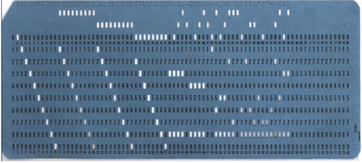

- 00 开篇词 怎样成长为优秀的软件架构师？.md
- 01 架构设计的宏观视角.md
- 02 大厦基石：无生有，有生万物.md
- 03 汇编：编程语言的诞生.md
- 04 编程语言的进化.md
- 05 思考题解读：如何实现可自我迭代的计算机？.md
- 06 操作系统进场.md
- 07 软件运行机制及内存管理.md
- 08 操作系统内核与编程接口.md
- 09 外存管理与文件系统.md
- 10 输入和输出设备：交互的演进.md
- 11 多任务：进程、线程与协程.md
- 12 进程内协同：同步、互斥与通讯.md
- 13 进程间的同步互斥、资源共享与通讯.md
- 14 IP 网络：连接世界的桥梁.md
- 15 可编程的互联网世界.md
- 16 安全管理：数字世界的守护.md
- 17 架构：需求分析 (上).md
- 18 架构：需求分析 (下) · 实战案例.md
- 19 基础平台篇：回顾与总结.md
- 20 桌面开发的宏观视角.md
- 21 图形界面程序的框架.md
- 22 桌面程序的架构建议.md
- 23 Web开发：浏览器、小程序与PWA.md
- 24 跨平台与 Web 开发的建议.md
- 25 桌面开发的未来.md
- 26 实战（一）：怎么设计一个“画图”程序？.md
- 27 实战（二）：怎么设计一个“画图”程序？.md
- 28 实战（三）：怎么设计一个“画图”程序？.md
- 29 实战（四）：怎么设计一个“画图”程序？.md
- 30 实战（五）：怎么设计一个“画图”程序？.md
- 31 辅助界面元素的架构设计.md
- 32 架构：系统的概要设计.md
- 33 桌面开发篇：回顾与总结.md
- 34 服务端开发的宏观视角.md
- 35 流量调度与负载均衡.md
- 36 业务状态与存储中间件.md
- 37 键值存储与数据库.md
- 38 文件系统与对象存储.md
- 39 存储与缓存.md
- 40 服务端的业务架构建议.md
- 41 实战（一）：“画图”程序后端实战.md
- 42 实战（二）：“画图”程序后端实战.md
- 43 实战（三）：“画图”程序后端实战.md
- 44 实战（四）：“画图”程序后端实战.md
- 45 架构：怎么做详细设计？.md
- 46 服务端开发篇：回顾与总结.md
- 47 服务治理的宏观视角.md
- 48 事务与工程：什么是工程师思维？.md
- 49 发布、升级与版本管理.md
- 50 日志、监控与报警.md
- 51 故障域与故障预案.md
- 52 故障排查与根因分析.md
- 53 过载保护与容量规划.md
- 54 业务的可支持性与持续运营.md
- 55 云计算、容器革命与服务端的未来.md
- 56 服务治理篇：回顾与总结.md
- 57 心性：架构师的修炼之道.md
- 58 如何判断架构设计的优劣？.md
- 59 少谈点框架，多谈点业务.md
- 60 架构分解：边界，不断重新审视边界.md
- 61 全局性功能的架构设计.md
- 62 重新认识开闭原则 (OCP).md
- 63 接口设计的准则.md
- 64 不断完善的架构范式.md
- 65 架构范式：文本处理.md
- 66 架构老化与重构.md
- 67 架构思维篇：回顾与总结.md
- 68 软件工程的宏观视角.md
- 69 团队的共识管理.md
- 70 怎么写设计文档？.md
- 71 如何阅读别人的代码？.md
- 72 发布单元与版本管理.md
- 73 软件质量管理：单元测试、持续构建与发布.md
- 74 开源、云服务与外包管理.md
- 75 软件版本迭代的规划.md
- 76 软件工程的未来.md
- 77 软件工程篇：回顾与总结.md
- 加餐 如何做HTTP服务的测试？.md
- 加餐 实战：“画图程序” 的整体架构.md
- 加餐 怎么保障发布的效率与质量？.md
- 热点观察 我看Facebook发币（上）：区块链、比特币与Libra币.md
- 热点观察 我看Facebook发币（下）：深入浅出理解 Libra 币.md
- 用户故事 站在更高的视角看架构.md
- 答疑解惑 想当架构师，我需要成为“全才”吗？.md
- 结束语 放下技术人的身段，用极限思维提升架构能力.md
- 课外阅读 从《孙子兵法》看底层的自然法则.md
03 汇编：编程语言的诞生
你好，我是七牛云许式伟。
在上一讲中，我们一起解剖了架构大厦的地基：冯·诺依曼体系。接下来，我们就开始沿着这座大厦攀登，一起来聊聊编程语言。
对于现代计算机来说，虽然 CPU 指令是一个很有限的指令集，但是CPU 执行的指令序列（或者叫“程序”）并不是固定的，它依赖于保存在存储中的数据，由软件工程师（或者叫“程序员”）编写的软件决定。
从上一讲中，我们可以知道，计算机的程序可能被保存在计算机主板的ROM上（这段程序也叫计算机的启动程序），也可能被保存在外置的存储设备（比如硬盘）上，并在合适的时机加载执行。
程序称得上是计算机的灵魂。指令序列的可能性是无穷的，程序的可能性就是无穷的。今天计算机创造的世界如此多姿多彩，正是得益于程序无穷的可能性。
那么，软件工程师是怎么编写程序的？
编程的史前时代
在第一门面向程序员的编程语言出现前，人们只能通过理解CPU指令的二进制表示，将程序以二进制数据方式刻录到存储（比如ROM或硬盘）上。
这个时期的编程无疑是痛苦的，效率是极其低下的：且不说我们怎么去修改和迭代我们的程序，光将我们的想法表达出来就极其困难。
我们首先要把表达的执行指令翻译成二进制的比特数据，然后再把这些数据刻录到存储上。
这个时候软件和硬件的边界还非常模糊，并不存在所谓软件工程师（或者叫“程序员”）这样的职业。写程序也并不是一个纯软件的行为，把程序刻录到存储上往往还涉及了硬件的电气操作。
为了解决编程效率的问题，汇编语言（和解释它的编译器）诞生了。汇编语言的编译器将汇编语言写的程序编译成为CPU指令序列，并将其保存到外置的存储设备（比如硬盘）上。
汇编语言非常接近计算机的CPU 指令，一条汇编指令基本上和CPU指令一一对应。
与机器对话
汇编语言的出现，让写程序（编程）成为一个纯软件行为（出现“程序员”这个分工的标志），人们可以反复修改程序，然后通过汇编编译器将其翻译成机器语言，并写入到外置的存储设备（比如硬盘）。并且，程序员可以按需执行该程序。
在表达能力上，汇编语言主要做了如下效率优化。
用文本符号（symbol）表达机器指令，例如 add 表示加法运算，而不用记忆对应的 CPU 指令的二进制表示。
用文本符号（symbol）表达要操作的内存地址，并支持内存地址的自动分配。比如我们在程序中使用了“Hello” 这样一段文本，那么汇编编译器将为程序开辟一段静态存储区（通常我们叫“数据段”）来存放这段文本，并用一个文本符号（也就是“变量名-variable”）指向它。用变量名去表达一段内存数据，这样我们就不用去关注内存的物理地址，而把精力放在程序的逻辑表达上。
用文本符号（symbol）表达要调用的函数（function，也叫“过程-procedure”）地址。对 CPU 指令来说，函数只有地址没有名字。但从编程的角度，函数是机器指令的扩展，和机器指令需要用文本符号来助记一样，函数的名称也需要用文本符号来助记。
用文本符号（symbol）表达要跳转的目标地址。高级语言里面，流程控制的语法有很多，比如 goto、if .. else、for、while、until 等等。但是从汇编角度来说，只有两种基本的跳转指令：无条件跳转（jmp）和条件跳转(je、jne)。同样，跳转的目标地址用文本符号（也就是“标签-label”）有助于程序逻辑的表达，而不是让人把精力放在具体的指令跳转地址上。
总结来说，汇编从指令能力上来说，和机器指令并无二致，它只不过把人们从物理硬件地址中解脱出来，以便专注于程序逻辑的表达。
但是，这一步所解放的生产力是惊人的，毕竟如果有选择的话，没有人会愿意用0101这样的东西来表达自己的思想。
可自我迭代的计算机
从探究历史的角度，你可能会期望了解最真实的历史发展过程。比如：怎么产生了现代计算机（以键盘作为输入，显示器作为输出）？怎么产生了汇编语言？怎么产生了操作系统？
不过，本专栏是以架构设计为目的，我们目的并不是还原最真实的历史。架构的意义在于创造。我们甚至可以设想一个有趣的场景：假设今天我们的信息科技的一切尚不存在，那么从架构设计角度，我们从工程上来说，如何更高效地完成从0到1的信息科技的构建？
最早的输入输出设备并不是键盘和显示器，而是打孔卡和打印机。用打孔卡来作为机器指令的输入，早在18世纪初就被用在织布机上了。早期的数字计算机就是用打孔卡来表达程序指令和输入的数据。
下图是 IBM 制造的打孔卡：

我们可以想象一下，第一台以键盘+显示器为标准输入输出的现代计算机出现后，一个最小功能集的计算机主板的ROM上，应该刻上什么样的启动程序？换句话说，这个现代计算机具备的最基本功能是什么？
从高效的角度（不代表真实的历史，真实历史可能经历过很多曲折的发展过程），我想，它最好具备下面的这些能力。
- 键盘和显示器的驱动程序。
- 当时最主流的外置存储设备（不一定是现代的硬盘）的驱动程序。
- 一个汇编程序编辑器。可从存储中读取汇编程序代码，修改并保存到存储中。
- 一个汇编编译器。可将汇编程序代码编译成机器代码程序，并保存到存储中。
- 可以执行一段保存在外置存储设备中的机器代码程序。
本质上，我们是要实现一个最小化的计算能力可自我迭代的计算机。
这个时期还没有操作系统（当然，把ROM上的启动程序BIOS看做一种最小化的操作系统，我觉得也可以，但毕竟不是现实中我们说的操作系统）。
汇编语言的出现要早于操作系统。操作系统的核心目标是软件治理，只有在计算机需要管理很多的任务时，才需要有操作系统。
所以，在没有操作系统之前，BIOS 包含的内容很可能是下面这样的：
- 外置存储设备的驱动程序；
- 基础外部设备的驱动程序，比如键盘、显示器；
- 汇编语言的编辑器、编译器；
- 把程序的源代码写入磁盘，从磁盘读入的能力。
最早期的计算机毫无疑问是单任务的，计算的职能也多于存储的职能。每次做完任务，计算机的状态重新归零（回到初始状态）都没有关系。
但是，有了上面这样一个 BIOS 程序后，计算机就开始发展起它存储的能力：程序的源代码可以进行迭代演进了。
这一步非常非常重要。计算机的存储能力的重要性如同人类发明了纸。纸让人类存储了知识，一代代传递下去并不断演进，不断发扬光大。
而同样有了存储能力的计算机，我们的软件程序就会不断被传承，不断演进发扬光大，并最终演进出今天越来越多姿多彩的信息科技的世界。
结语
今天我们一起回到了编程的史前时代，共同回溯了编程语言诞生的历史。
为了不再用“0101”表达自己的思想，人们创造了汇编语言，这一步让编程成为一个纯软件行为，程序员这一个分工也由此诞生。
为了进一步支持程序员这个职业，我们设计了MVP版（最小化可行产品）的可自我迭代的计算机。有了这个计算机，我们就可以不断演进，并最终演进出今天越来越多姿多彩的信息科技的世界。
架构上的思考题
在上一讲中，我们谈架构思维时提到，我们在需求分析时，要区分需求的变化点和稳定点。稳定点往往是系统的核心能力，而变化点则需要对应地去考虑扩展性上的设计。
今天，我们假设要实现一个最小化的计算能力可自我迭代的计算机，需求如上所述。
那么，它的变化点和稳定点分别是什么？为此，你会怎么设计出哪些子系统，每个子系统的规格是什么？扩展性上有哪些考虑？
欢迎把你的想法告诉我，我们一起讨论。感谢你的收听，再见。
© 2019 - 2023 Liangliang Lee. Powered by gin and hexo-theme-book.